Excited.sa
Plan events from the first brief to the final moment.
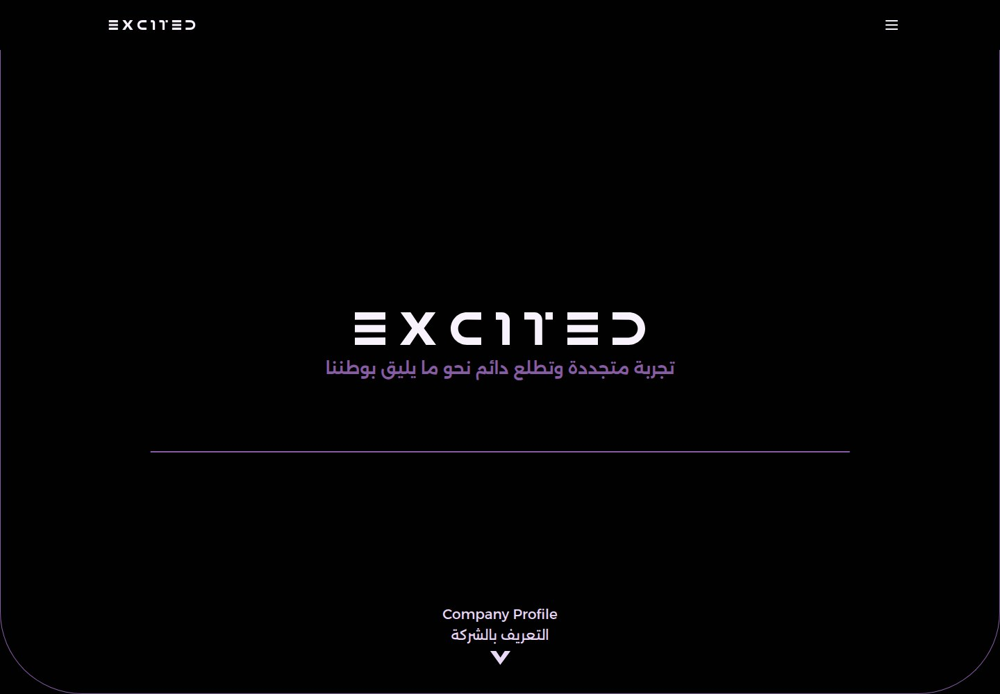
WHAT IT IS
Event planning and management
The company presents itself as a provider of event planning, execution and management, with supporting exhibition, logistics, consulting, entertainment and event-technology services. The descriptions are promotional statements on a single Arabic-language homepage, not independently verified delivery claims.
This case study documents what the linked website presents. Individual contribution to this project has not been confirmed.
WHAT THE WEBSITE OFFERS
- Event management and supervision: the page describes planning and executing projects against schedules, specifications, quality standards and client objectives.
- Strategic planning and management tasks: named items include strategic planning, creative design, resource and budget management, coordination, quality inspection, and safety.
- Exhibition and event support: listed services include crowd management, venue/site design, hospitality, and organizing ancillary programs; illustrative images accompany some items.
- Event logistics: listed options include hotel/travel arrangements, printed materials and gifts, valet parking, passenger transport, and shipping event supplies.
- Event consulting: a section describes tailored advisory support across event organization.
- Entertainment offerings: listed examples include live performances, interactive games, workshops, cooking experiences, contests, photo/video areas, and rest areas.
- Event technology and digital services are described, including AI/interactive robots, AR/VR, attendance analytics, event apps, visitor tracking, digital security, and digital media promotion; these appear as service descriptions, not demonstrated software functions.
- A production-line section describes equipment planning, operation, quality control, maintenance and performance analysis; the page does not establish whether a factory or production capability is currently operating.
VISITOR JOURNEY
Scroll the single-page homepage from the hero through company profile/story, vision and service sections to the contact area; no separate service or product route was visited.
AUTHENTIC SCREEN CAPTURES · 11
Inside the experience.
Genuine, distinct screen captures supplied for this project. No screenshots have been fabricated or duplicated.
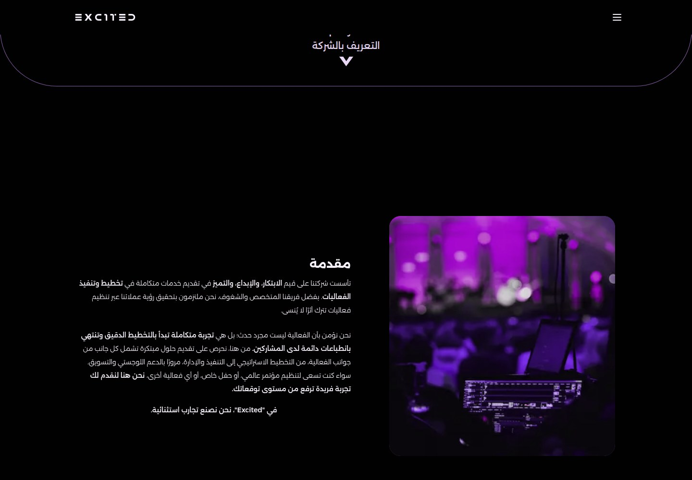
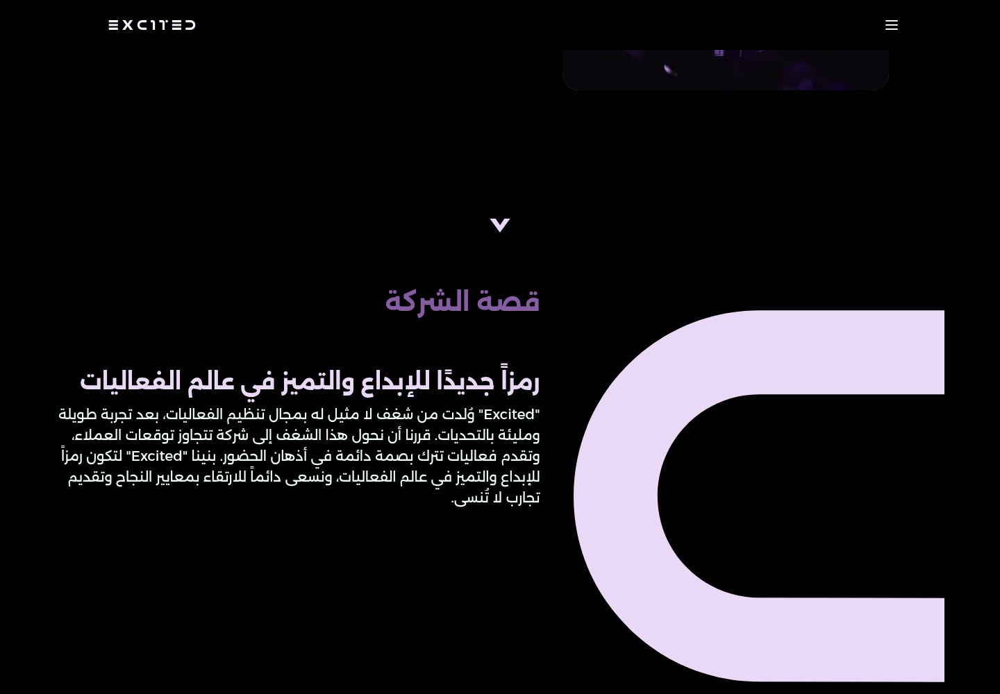
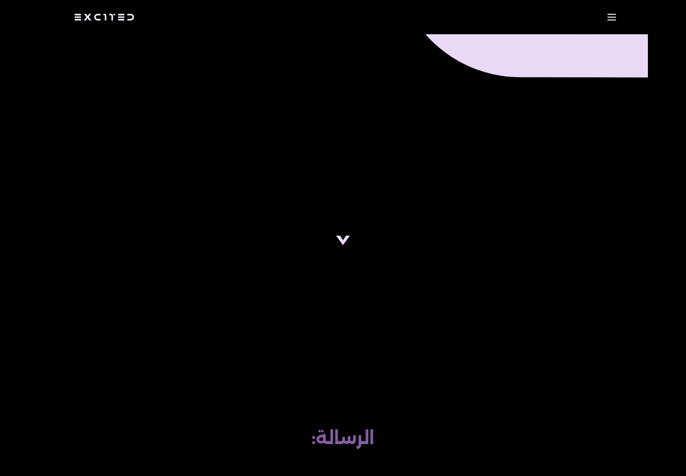
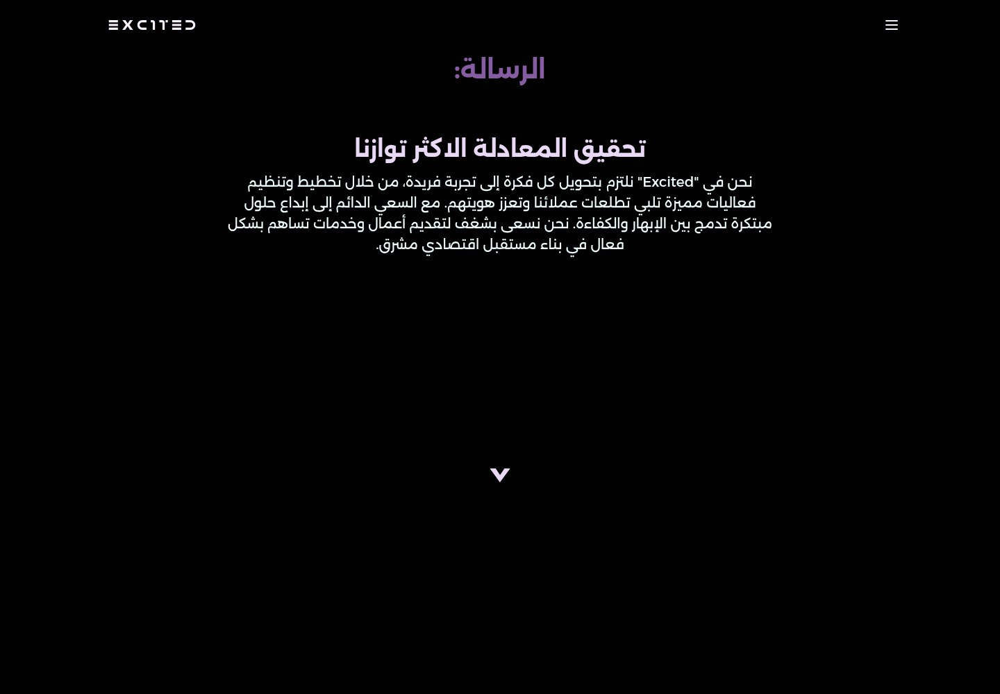
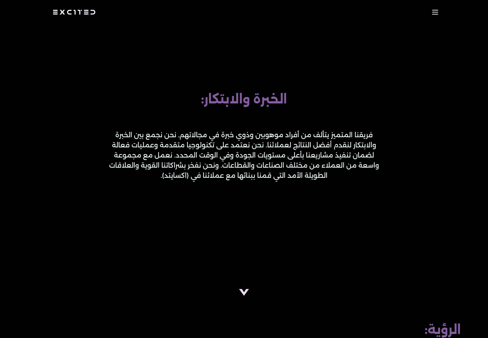
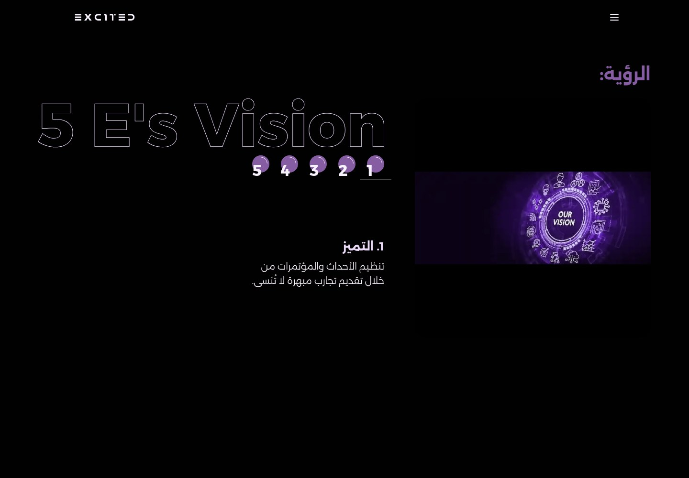
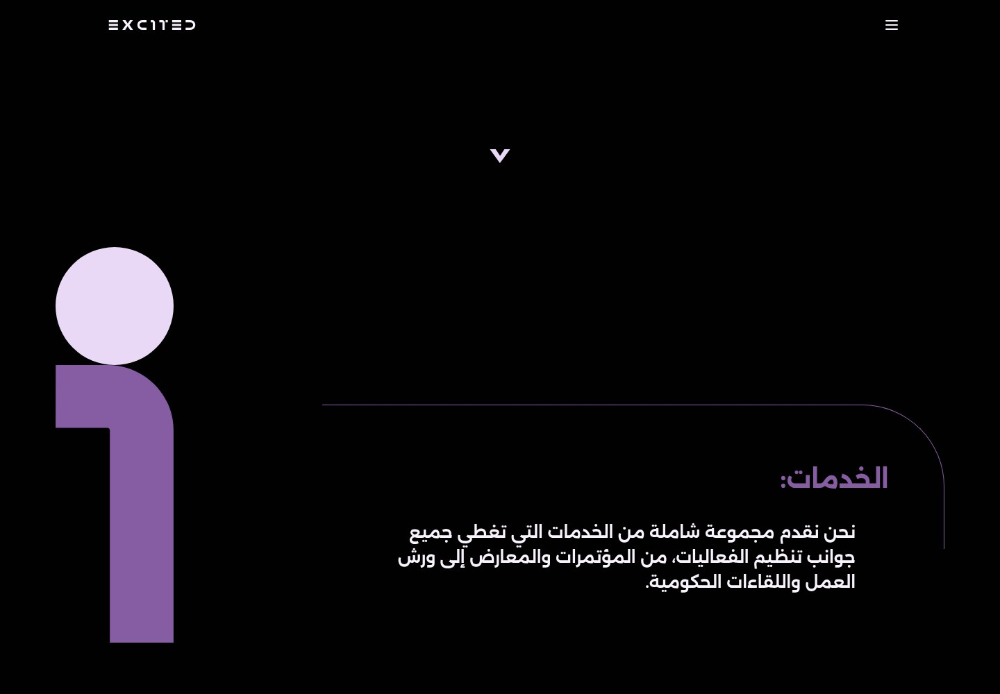
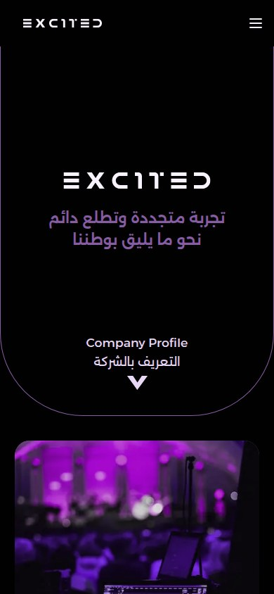
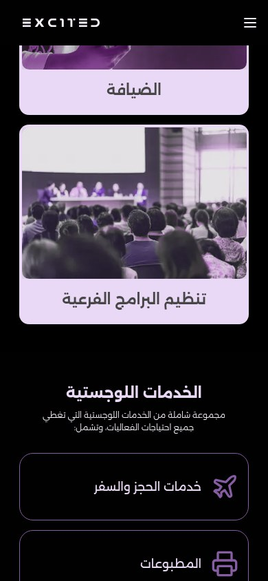
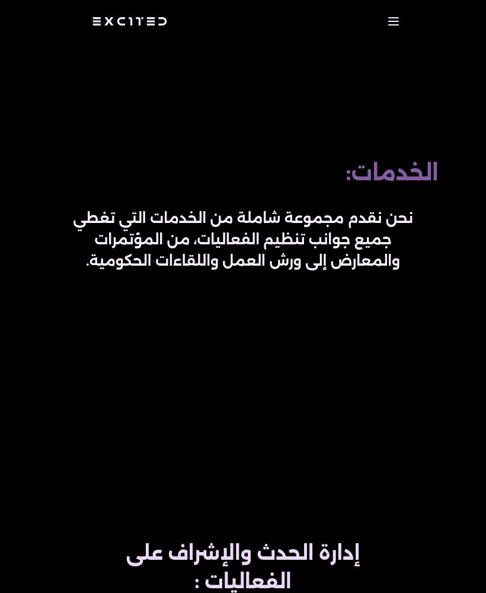